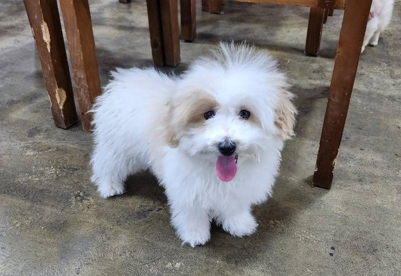
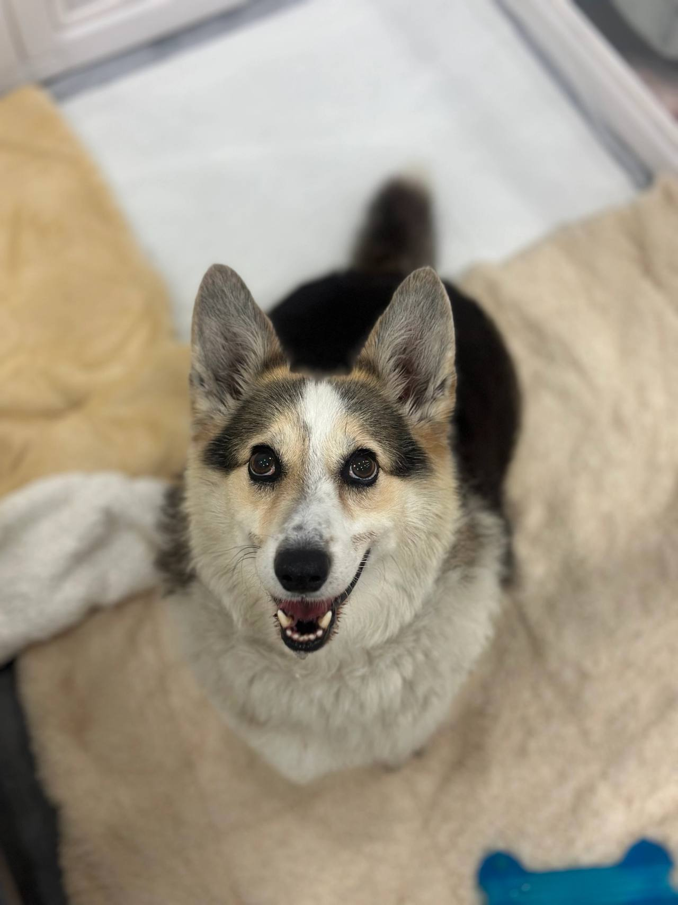
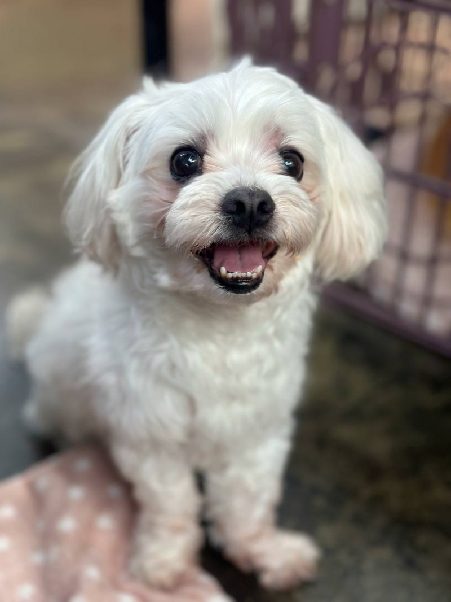
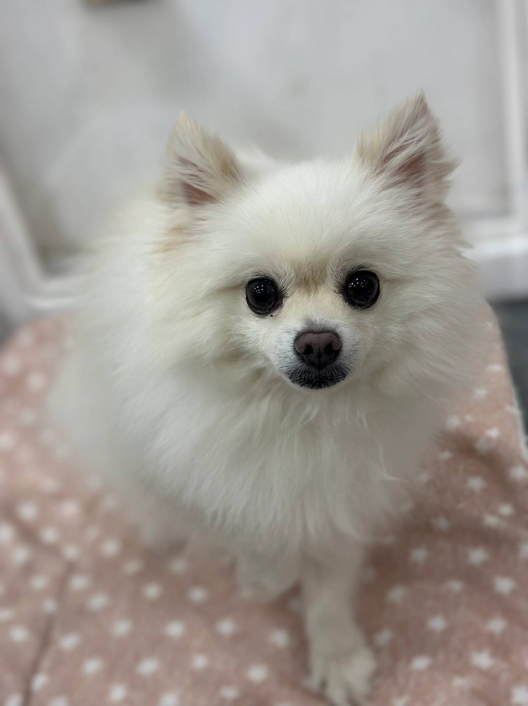

임신, 출산
출산 전후로돌보기 어렵거나아기와 함께 두기불안할 때
LOCAL GUIDE
가족 같은 반려견이 새로운 전환점을 맞이할 수 있도록 올바른 정읍유기견보호센터 환경을 찾는 일에 소홀함이 없어야 합니다. 소음 스트레스를 줄이고 개체 간 불필요한 충돌을 방지하는 분리 배치가 기본입니다. 현재 보호 공간에 잔여석이 없을 경우 위탁이 거절되므로 사전 조율을 반드시 거쳐야 합니다.
REHOMING
개인적인 사정으로 반려견과 더 이상 함께하기 어려운 상황일 때 체계적인 절차를 거쳐 아이를 입소시키고 무료 분양으로 보금자리를 이어 줍니다. 전화 상담(0505-707-0401)을 통해 현재 상황을 파악하며 무리한 수용 대신 여건에 맞춰 신중하게 돌봄을 시작합니다.
갑작스러운 환경 변화 속에서도 아이가 평온함을 잃지 않도록 세심하게 보살피며 다음 행보를 준비합니다. 이는 책임 있는 보호 속에서 아이에게 새로운 가족을 만날 기회를 열어 주는 과정입니다.
새로운 가족을 찾아 주는 일은아이에게 건넬 수 있는마지막 선물입니다.
출산 전후로돌보기 어렵거나아기와 함께 두기불안할 때

함께 살다동물 알러지가 나타나생활이 어려워졌을 때

해외로 데려갈 수 없거나이사한 집에서함께하기 어려울 때군 입대와 오랜 부재도같은 경우에 가깝습니다.

보호자가 아프거나연로해졌을 때아이도 나이가 들어집에서 돌보기 어려울 때
상담부터 입양 공고까지, 순서는 같습니다.

유선 상담을 통해 나이, 지역, 질병 유무와 특이 상황을 확인합니다. 센터 내부 공간을 종합적으로 살펴본 뒤 1차 입소 가능 여부를 결정합니다.

직접 센터로 방문하시거나 이동 지원 일정을 조율하여 선택합니다. 전국 어디든 전담 인력이 무상으로 픽업하여 이동을 돕습니다.

제반 확인 사항과 규정된 비용 조항을 면밀하게 검토합니다. 안내 내용을 충분히 숙지한 후 정식 입소 동의서를 작성합니다.

건강 상태와 함께 대형견, 소형견, 노령견 여부를 다각도로 살핍니다. 확인된 상태에 맞춰 아이가 안전하게 머물 전용 공간을 정합니다.

안정적인 생활 속에서 아이의 사진과 영상을 정성껏 촬영합니다. 새로운 인연을 맞이할 수 있도록 사전 자료를 차분히 정리합니다.

공식적인 입양 공고를 등록하여 아이의 다음 여정을 이끕니다. 적합한 보금자리를 찾아 새로운 가족과 따뜻하게 연결됩니다.
개별 일과와 성향 점검을 거쳐 생활 적응을 준비하고 있는 강아지 현황입니다.
양육 환경과 반려견의 성향이 부합하는지 점검하는 순서입니다.
주거 형태, 가족 구성원의 동의 여부, 돌봄 시간 등을 유선 상담을 통해 점검합니다.
보호소에 방문하여 개체의 건강 이력과 행동 특성을 확인하고 직접 대면 시간을 가집니다.
지속 양육에 관한 세부 항목을 확인하고 확인 서류를 작성한 뒤 가정을 이룹니다.
산책하고, 밥 먹고, 미용하는 보호소의 하루입니다. 사진을 누르면 그 이야기를 볼 수 있어요.
안내
정읍 생활권 내에서 예상치 못한 상황으로 보호 처소를 급히 수소문할 때도 기본 절차는 지켜져야 합니다.
자세한 입소 조건과 생활 규정이 궁금하신 보호자께서는 대표 전화 0505-707-0401 연결로 정읍유기견보호센터 관련 사항을 상세히 알아보세요. 정원이 초과되면 어떠한 경우에도 신규 수탁이 불가하므로 유선 일정 조율이 필수적입니다. 유선 통화를 통해 현재 아이의 특이 성향을 공유하고 상담을 예약할 수 있습니다.
민석 씨의 가족은 입원 일정이 촉박하여 당일 즉시 아이를 들여보내길 원했습니다. 그러나 센터에서는 무조건적인 당일 입소는 원칙적으로 불가능하다는 단호한 답변을 주었습니다. 아이가 머무를 전용 단독 생활실의 위생 소독과 전담 인력 배정이 사전에 준비되어야만 교차 감염과 사고를 막을 수 있다는 이유였습니다.
처음에는 서운한 마음이 들었으나 설명을 들을수록 생명을 수용하는 곳으로서의 엄격한 책임감을 느낄 수 있었습니다. 센터의 지침에 따라 유기견 접종 카드와 과거 수술 이력을 전달하고, 다음 날 안전하게 입소할 수 있도록 일정을 확정했습니다.
Q: 맡길 때 발생하는 관리 비용은 왜 정해진 정찰제가 아닌가요? 아이들마다 나이, 건강 상태, 체구, 성격적 특성이 천차만별이기 때문입니다. 지속적인 피부약 복용이나 관절 영양 공급이 필요한 아이와 건강한 유견은 투입되는 관리 자원의 규모가 완전히 다를 수밖에 없습니다.
A: 0원 입소나 정해진 저가 요금을 홍보하는 곳은 실제 입소 후 방치로 이어질 소지가 있으므로 주의해야 합니다. 정읍 정읍유기견보호센터 신청 시 아이의 상태를 솔직하게 말씀해 주시면, 투명한 관리 기준에 맞춘 현실적이고 합리적인 보호 비용을 안내해 드립니다.
반려견을 불가피하게 떠나보내야 하는 상황일수록 감정에 치우치지 말고 이성적으로 시설의 실체를 검증해야 합니다. 인터넷 지도상에만 존재하는 가짜 지점 주소에 속지 않으려면 유선 상담을 통해 실질적인 보호 공간의 위치와 운영 방식을 반드시 확인해야 합니다.
정식 보호 센터는 무리한 과밀 수용을 피하기 위해 정원 제한을 두고 있으며 체계적인 위생 설비를 유지합니다. 정읍 정읍유기견보호센터 선정 시 아래 점검 목록을 하나씩 대조해 보며 믿을 수 있는 시설인지 꼼꼼히 확인하시기 바랍니다.
보호실에 안착한 아이는 전담 관리사의 일대일 관찰을 받으며 프로필 사진 및 성격 소개 영상으로 기록됩니다. 이러한 기초 자료는 입양 희망자들에게 투명하게 제공되며, 단순 호기심에 의한 입양을 차단하기 위해 엄격한 주거 환경 심사와 가족 전원 동의 확인을 거칩니다.
한편 아이를 새로운 가족으로 맞이하고자 희망하는 분들을 위한 전용 입양 상담망은 0505-464-1004로 분리 운영됩니다. 보호가 끝이 아니라 다시 사랑받는 삶으로 복귀하는 것이 궁극적인 목표이기에, 올바른 입양 가정을 선별하는 과정에 센터의 모든 역량을 집중하고 있습니다.
센터 도착 직후 신원 확인과 함께 공식 입소 행정 절차가 진행됩니다. 보호자는 센터의 관리 규정을 숙지하고 정식으로 소유권을 위탁 및 포기하는 서약 문서에 서명 날인합니다. 이는 향후 발생할 수 있는 법적 분쟁을 방지하고 아이의 안정적 입양 권한을 확보하기 위함입니다.
이와 동시에 국가 동물등록 변경에 필요한 식별 번호를 확인합니다. 신분증 사본, 접종 기록 카드, 기존에 섭취하던 사료 및 사용 물품을 담당 간사에게 인계함으로써 공식적인 인도 과정이 마무리됩니다.
격리 기간을 무사히 마치고 메인 생활실로 이동한 아이는 전용 잔디 운동장에서 다른 친구들과 뛰놀며 활기를 되찾았습니다. 미디어 팀은 아이의 쾌활한 산책 모습과 온순한 성격을 담은 고화질 사진과 영상을 정성스럽게 제작하여 공식 입양 채널에 게시했습니다.
아이의 이야기를 접한 수많은 분들 중 마당이 있는 주택에서 반려견을 키운 경험이 풍부한 한 부부가 입양을 신청해 왔습니다. 입양 신청은 전용 번호인 0505-464-1004를 통해 접수되었으며, 주거 환경 점검과 심층 대면 인터뷰를 통과하며 최종 입양자로 확정되었습니다.
Q: 방문 당일에 어떤 서류와 물품을 지참해야 행정 절차가 마무리되나요? 우선 법적 보호자임을 증명할 수 있는 신분증과 동물등록 정보(등록증 또는 외장 칩 번호)가 필수적입니다. 센터에 도착하시면 정식 소유권 이전 및 입양 위탁 서약서를 작성하게 됩니다.
A: 물품으로는 기존에 급여하던 사료 소량, 정기 접종 수첩, 그리고 평소 애착을 느끼던 장난감이나 담요를 챙겨오시는 것이 좋습니다. 낯선 환경에 들어선 아이에게 익숙한 체취는 극심한 불안을 줄여주는 소중한 매개체가 됩니다.
일부 업체에서 홍보하는 무조건적인 당일 수용은 시설 내 바이러스 창궐이나 관리 인력 부족으로 이어지기 쉽습니다. 아이가 안전하게 머물려면 최소한의 공간 배정 시간과 격리실 준비가 선행되어야 합니다.
입소 전 사전 전화(0505-707-0401)를 통해 현장 공실 상태를 승인받았는지 점검하십시오. 아이가 이동 직후 바로 쉴 수 있는 단독 공간이 확보되어 있어야만 불필요한 이동 스트레스와 사고를 예방할 수 있습니다.
보호 관리 약정 체결 및 권리 이관
체계적인 돌봄 및 향후 입양 심사 권한에 대한 약정을 서면으로 체결하고 제반 사항을 최종 확정합니다.
현장 내방 및 물리적 환경 대면 검진
실제 머물게 될 시설의 위생 상태를 둘러보고 아이의 보행 상태, 피부, 안구 건강을 대면 확인합니다.
개별 맞춤 생활실 입실 및 루틴 적응
독립된 생활 공간에 입실하여 전담 매니저의 집중 모니터링 아래 정해진 일과표에 맞춰 생활을 시작합니다.
정읍유기견보호센터 상담 전화는 무엇인가요?입소 상담 전화는 0505-707-0401입니다. 정읍이라고 해서 바로 맡길 수 있는 것은 아니고, 자리와 아이 상태를 먼저 확인합니다.
정읍에 따로 적힌 보호소 주소가 있나요?정읍유기견보호센터 페이지는 정읍 상담 안내입니다. 이 글에 없는 주소를 그 지역 지점이라고 안내하지 않습니다.
전화하면 바로 진행되나요?자리가 없거나 생활이 맞지 않으면 바로 진행되지 않습니다. 전화로 확인한 뒤 만남을 정합니다.
개인 차량 이동이 불가능한 경우 이동 편의가 지원되나요?장거리 이동이나 대중교통 이용이 어려운 상황이라면 안전 전용 차량 운행 여부를 유선 상담을 통해 조율하실 수 있습니다.
입소 시 어떤 증빙 서류들을 필수적으로 지참해야 하나요?보호자 신분증, 동물등록 정보 변경을 위한 등록증 또는 식별 번호, 최근 진료 및 접종 증명서를 지참하셔야 합니다.
시설 이용에 수반되는 관리 비용은 어떻게 결정되나요?아이의 체격, 연령, 기저 질환에 따른 특별 케어 필요성에 따라 산출 기준이 달라지며 유선 상담 시 투명하게 안내해 드립니다.
예약 없이 당일에 바로 방문하여 보호를 요청할 수 있나요?보호실 잔여 공간이 없으면 접수가 절대 불가하므로 반드시 사전에 전화로 공실 여부를 확인한 후 방문하셔야 합니다.





CONTACT
입양과 입소, 전국 어디서든 전화로 상담합니다.
전국 입소문의